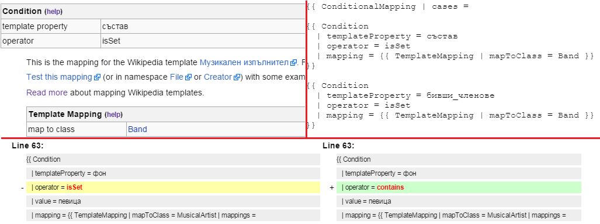
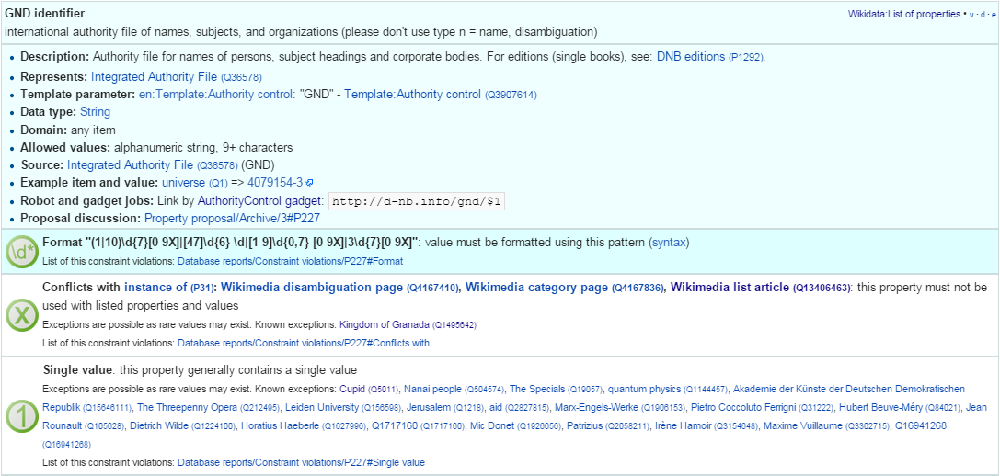

DBpedia Ontology and Mapping Problems
Vladimir Alexiev
2015-02-16
2D presentation (O for overview, ? for help). Continuous HTML. Publications
Table of Contents
- 1. DBpedia Data Quality
- 2. Issue Tracking
- 3. Mapping Language Issues
- 4. Mapping Server Deficiencies
- 5. Mapping Wiki Deficiencies
- 6. Mapping Issues
- 7. Extraction Framework Issues
- 7.1. Issues Important for Local Chapters
- 7.2. Date as Page is not Extracted
- 7.3. Object Property Extractor Does Not Respect Ranges
- 7.4. Curious Parents and Poor Data Monarchs
- 7.5. Data Property Extractor Does Not Respect Datatypes
- 7.6. Use Domain & Range to Guide Extraction
- 7.7. Specific Properties
- 7.8. Various Extraction Issues
- 8. External Mapping Problems
- 9. Ontology Problems
1 DBpedia Data Quality
- DBpedia is a crucial LOD dataset used by many, including for commercial applications by companies like Ontotext.
- But DBpedia data quality leaves a lot to be desired, and has been the subject of many recent papers.
- Most of these papers describe approaches for finding errors.
Instead, I want to focus on root causes of important error classes and to propose fixing approaches. We focus on:
- Lack of documentation on classes and properties
- Weak editorial process in the mapping wiki, lack of issue tracking
- Ontology problems, mostly due to the weak editorial process. Compare to Wikidata property proposal process
- Potential improvements for error checking in the mapping wiki (both ontology and mapping)
- Deficiencies of ontology mapping to external ontologies
- Extractor deficiencies
I give many concrete examples
1.1 Ontotext's DBpedia Experience
- Used DBpedia for at least 5 years
- Eg http://factforge.net aggregates DBPedia, FreeBase, GeoNames, etc (9 central LOD datasets), but old versions
- Developed mapping layers, eg PROTON; contributed to UMBEL
- Use in FP7 Multisensor: DBpedia in 5 languages as a core background dataset
- Use in FP7 Europeana Food and Drink: DBpedia in 11 languages as the backbone of EFD Classification
- Just started hosting http://bg.dbpedia.org (above FP7 projects include Bulgarian)
Most importantly:
- Use DBpedia labels and other features for commercial Semantic Enrichment (media, publishers, etc)
- Now also for Bulgarian (BG project with OffMedia)
Until now, only grumbled internally about DBpedia data quality
- A couple months ago started looking actively into that
- Many improvements to bg.dbpedia mappings
- Posted suggestions and issues to dbpedia
- Pragmatic approach
1.2 A Non-sense Mapping
Mapping_el:Quote_box is utter nonsense
- Mapped to Road, so eg the Greek article on History will be mapped to Road
The only meaningful property (quote text) won't be extracted because category is an ObjectProperty:
{{ PropertyMapping | templateProperty = quote | ontologyProperty = category }} {{ PropertyMapping | templateProperty = quoted | ontologyProperty = category }}"title" (if any), is intermixed with non-semantic properties like background and font:
{{PropertyMapping | templateProperty = title| ontologyProperty = title }} {{PropertyMapping | templateProperty = title_bg| ontologyProperty = title }} {{PropertyMapping | templateProperty = title_fnt| ontologyProperty = title }}- Most of the properties (eg size, style) have no semantic significance
Alignment -> picture ??
{{PropertyMapping | templateProperty = align | ontologyProperty = picture }} {{PropertyMapping | templateProperty = salign | ontologyProperty = picture }} {{PropertyMapping | templateProperty = halign | ontologyProperty = picture }} {{PropertyMapping | templateProperty = qalign | ontologyProperty = picture }}I especially like these mappings. 1 is a number, alright ;-)
{{ PropertyMapping | templateProperty = 1 | ontologyProperty = number }} {{ PropertyMapping | templateProperty = 2 | ontologyProperty = number }}- Stats happily reports all props are mapped
1.3 Have I got your attention?
I wanted to open with a horrible example to get your attention
- You may think the above is a weird exception, but it is not
- All of the DBpedia ontology and mappings are crowd-sourced
- But due to lack of editorial process, documentation and discussion, the results are… less than ideal
Ontology problems include duplicated properties, non-standard properties, etc
- But they pale in comparison to mapping problems (subjectively: 5% vs 95%)
- Efforts to improve the ontology and improve the mappings should be appropriately balanced
- These efforts must be intimately tied, else we'll not achieve much improvement
It doesn't take an ontological discussion on the nature of Numbers to figure out this is wrong:
{{ PropertyMapping | templateProperty = 1 | ontologyProperty = number }}- Prop number is not documented (i.e. not well-defined), but that's not the problem here
- Crowdsourcing without editorial process = allowing any fool to write nonsense
1.4 Mapping Issues Bigger Than Ontology Issues?
Thesis: ontology problems pale in comparison to mapping problems
- Lack of documentation of classes & props
- Sometimes template props in wikipedia are also not documented
- This turns mapping into guesswork (also because of Object/DataProp Dichotomy 3.2)
- Many people don't research exising props before making new
- Lack of editorial process
- Bad practices are copy & pasted (3.3)
1.5 Balanced Effort
Please don't focus your energy and efforts only on ontology problems
- The ontology and mappings are intimately connected
- The effort between fixing ontology & mapping problems should be balanced
- If we fix ontology problems in isolation from mapping: no useful result
It will take lots of pragmatic & concerted editorial effort
- Research current usage in various areas (eg Name props, Place parent hierarchy, Membership…)
- Best practice writing, wiki gardening, bot writing
- Not necessarily by world-class ontological thinkers
- But by people willing to spend the time and build consensus (examples: Wikipedia, Wikidata)
Are we up to it?
2 Issue Tracking
A major problem was that ontology and mapping issues were not tracked
- D.Kontokostas made trackers on github about a month ago
- mappings-tracker/issues: mapping issues, issues with the mapping wiki
- ontology-tracker/issues: issues with the ontology
- (old): extraction-framework/issues: technical problems with the extraction software
But so far it seems I'm the only one using them :-(
- I've posted 19 extraction-framework/issues, Referenced below with bigger numbers, eg #286
- I've posted 36 mappings-tracker/issues. Referenced below with small numbers, eg #20
- I haven't posted ontology-tracker/issues, since IMHO ontology and mapping problems are intimately related
- If we start using Web Protege, it must be just as intimately related to the mapping wiki!
All discussion should be in the wiki
- The tracker is for tracking only, not for keeping knowledge
- Issue and Discussion should be interlinked (paste links in each)
2.1 Testing Best Practice
Say you made a new mapping or fixed a mapping
- There's a test link to return triples
- But they're "random" triples and it works only for enwiki/ASCII (#289)
The individual triple extractor is more useful
First find wikipedia usages and pick up some individuals, eg
Летисия Каста
- Then go to Discussion page, add section "Testing" and make test links (cases), eg
These test cases serve important purposes:
- Illustrates the problem
- As proof it works after the problem is fixed
- To provide test cases for any bugs in the extraction framework (upstream bug reporting)
Proposed as editorial policy
3 Mapping Language Issues
The mapping language is a set of wiki templates expressing classes, props, mappings
- The very concept of using a wiki to express mappings is quite excellent
- But the mapping framework has a few deficiencies
- "ConditionalMapping" is very possible to fix
- "Modularity" is hard/impossible to fix
- #22 what are "super" datatypes? is more of a question
- Neither of these is crucially important
Various cosmetic fixes to the mapping wiki are in the next section
3.1 ConditionalMapping Not Flexible Enough
#310: bg:Musical_artist has complex ConditionalMapping logic (translated from bg):
- If "members", "former_members", "created" -> Band
- If "background" includes "group", "quartet", "ensemble", "choir" -> Band
- If "background" includes "composer" -> MusicComposer
- If "background" includes "director" -> MusicDirector
- If "background" includes "she-singer" -> MusicalArtist, gender=dbo:Female
- If "background" includes "he-singer" -> MusicalArtist, gender=dbo:Male
- If "background" includes "he-pianist" -> MusicalArtist, gender=dbo:Male
- If "suffix=a" -> MusicalArtist, gender=dbo:Female
- "suffix=a" in BG/RU indicates Female gender, eg my wife is Alexieva
- Otherwise -> MusicalArtist, gender=dbo:Male
ConditionalMapping is linear, so we can't:
- Check "suffix" of "composer" to emit gender
- Check if "background" includes "composer" and "director" to emit both MusicComposer and MusicDirector
#310 was fixed to merge triples produced by each matching condition. So the logic was changed from completely sequential to completely parallel (additive). But PR#443 is not yet merged.
3.2 Object/DataProp Dichotomy
The mapping language adopts the OWL Dichotomy between owl:ObjectProperty and owl:DatatypeProperty
- rdf:Property is more flexible in that it can have either or both
- This dichotomy doesn't always work well with current wikipedia practice
- Eg saint's dbp:patronage has both:
- object references: countries, cities, House_of_Este, Archdiocese_of_Milan, Rosary…
- text literals: "fishermen", "the sick", "Prisoners", "Persecuted Christians"…
- Many other examples
Some templates harvest the same template field -> ObjectProp & DataProp
- Eg firstAscent -> firstAscentPerson (object), firstAscentYear (literal)
- Others exemplified by "field" (object) vs "fieldName" (literal)
- But this is not used systematically (eg there's no "childName" to complement "child")
- Hard to know when to use it: #327 Field Sampling
Do you think this should be fixed?
3.3 Mapping Framework is not Modular Enough
- There's no mapping of a property or group of properties
- Thus mapping patterns cannot be reused but have to be copy-pasted
- We need to copy the complex suffix/gender ConditionalMapping 11 times
- Some bad patterns are copied over and over again, replicating their problems
- IMHO hard to impossible to fix
4 Mapping Server Deficiencies
The mapping server has good Stats and Testing features, but more is needed
- #327 Field Sampling:
- On template stats, for every field, add a hyperlink to show some occurrences
- Extremely useful to understand the meaning of some fields
- And whether they're links, text, or both (3.2)
- #3 Statistics and Validator to check for redirected templates. Prevent problems like
- #287 some invalid domain, range, subPropertyOf
- Check that prop names in templates start with lowercase
- Class names uppercase, include no comma
- Eg
firstAscentYear rdfs:domain Peak,Volcanois breakage
- #289 testing works only for en/ASCII (see 2.1 for workaround)
- #304 extraction tester should return encoding UTF-8
- Else browser displays gibberish: need to save file & open in proper editor
- Makes it unnecessarily hard to test international mappings
- #308 statistics should check params of GeocoordinatesMapping
5 Mapping Wiki Deficiencies
IMHO the mapping wiki is quite workable (some enhancements are in order)
- Eg "OntologyProperty=foo" finds uses of "foo"
- If Web Protege is adopted, it should be as tightly knit with the mappings as currently
Improve editing:
- #31 show class & prop info while/at Mapping
- #32 add Preview and key shortcuts. Like on any wikipedia!
Improve search:
- #1 add class hierarchy to left navbar
- #2 add Search for Property to left navbar
- #25 FTS doesn't index everything
Improve collaboration
- #33 Add editorial templates/addons: but this is not why we're not doing it
5.1 Improve Display of Mappings
- #30: The current display (left) is useless (nobody bothers "header=no")
- I just look at the source Edit tab (right)
- The "diff" display (bottom) is quite good

6 Mapping Issues
Biggest reason for current situation is lack of Discussion and Editorial process
- Contrast to Wikidata Property Proposal process, eg for Authority_control
- Rich metadata: guidelines on use (eg what items applies to), corresponding register/authority file (if any), examples, format validation, uniqueness constraints, known exceptions, dynamic validation reports, etc.
- All reasoning & discussion preserved

6.1 No Editorial Process
- Compare to Wikidata's lack of editorial process for Classes
- Any fool can make "instance of" or "subclass of" claims (thus classes and hierarchy)
- Result: 17k classes, at least 2/3 are junk (less than 5 instances)
Examples
- location> geographic location> facility> laboratory> lab-on-a-chip:
- But "lab-on-a-chip" is a "device that integrates one or several laboratory functions on a single chip of only millimeters to a few square centimeters in size", hardly a "geographic location"!!
- location> storage> data storage device> audio storage device> album:
- Any NER implementor will balk at "albums are locations". The everyday understanding of "location" as "place" is implemented as the subclass "geographic location". But nevertheless, an "album" is a creative work, and as such is a conceptual object that persists even after all its copies are destroyed. It's definitely not a "storage device"!
6.2 Lack of Documentation
Many props/classes have no comment. Everyone has complained about this
- It takes a lot of unnecessary digging to figure out the meaning of a prop
You'd never guess what "event" is until you investigate usages, eg this SL mapping:
Antonio_Pettigrew dbo:event Moški_tek_na_400_m # (male race on 400m)
- Then you figure out it's the same as sportDiscipline and should be replaced
Must be merciless about new props & classes: no comment means automatic deletion
- But what to do about existing props with no comment?
- Thus #6 "add documentation to every property" is a very large ongoing task
6.3 Good Documentation Is Specific
Comments should describe Usage (ie Scope Notes) and compare to similar props
- Eg what's member vs membership?
- When to use teamMember vs currentTeamMember vs sportsTeamMember?
Good examples:
- sportDiscipline: the sport discipline the athlete practices, e.g. Diving, or that a board member of a sporting club is focussing at
- zodiacSign: Applies to persons, planets, etc
- bustWaistHipSize: Use this property if all 3 sizes are given together (DBpedia cannot currently extract 3 Lengths out of a field). Otherwise use separate fields bustSize, waistSize, hipSize
6.4 Duplicate & Semi-Duplicate Properties
#5 Eliminate semi-duplicate properties: another long-term task:
- Research individual problems
- Write up decisions and best practices
- Clean up mappings that violate them
A few random examples, but this just scratches the surface
6.5 Need for Research
Need to research problem areas & individual problems!
- Need to write resolutions & best practices
Example 1: What's_in_a_Name
- Believe it or not, DBO has 86 properties called "name".
- Birth, former, historical, old, original, previous, same, present: in what situations should each one be used?
- About 30 Language-specific_Name Props need to be converted to one prop with lang tag
- Eg #15 use "language" instead of "cyrilliqueName"
Other candidates:
- Membership props
- Place hierarchy props, etc
Any takers to research and write up?
6.6 Need for Research
Example 2: #19 fix mapping Listen. Conclusion:
- delete class Listen, replace with prop soundRecording
map using IntermediateNodeMapping:
dbr:Neil_Armstrong soundRecording dbr:Neil_Armstrong__1. dbr:eil_Armstrong__1 a Sound; dc:type "sound"; filename "one-small-step.ogv"; title "One small step for man..."; description "Neal Armstrong's famous words".
- #19 contradicts my own decision not to put knowledge in the tracker
- But when Listen is deleted, its Discussion page will also go away…
6.7 Validate Ontological Assumptions
Sometimes one needs to resort to SPARQL to find out usage
Assumption: "Only material things can have color". Let's check:
select * {?x dbpedia-owl:colour ?y}
- Shows that political parties, places, schools, etc have colours
- Especially useful to reassure oneself that non-sense classes have no instances
- Leading to a quick and painless deletion
6.8 Property and Class Naming
Pragmatic problems:
- spelling consistency (UK vs US): colour but eyeColor & hairColor?
- camel-casing
- #7 Fix Greek Astronomy templates
- Garbage prop names: appmag_v, dist_ly, names, size_v, Dist ly, Names, Dist pc, Credit, Dec, Ra
- ¡No pasarán!
Props should start with lowerCase, classes with UpperCase, eg 9.3 (oops!):
dbo:bronzeMedalist rdfs:subPropertyOf dbo:Medalist
6.9 Various Mapping Issues
- #27 Mapping_el:Quote_box is utter nonsense
- #4 Merge Geopolitical organization to Country (template is redirected)
- #8 excessive use of intermediate nodes in French mappings
- #29 fix Parent places from frwiki (remove takePlace, sharingOut)
- #9 Mapping_commons:NARA-image-full
- #10 prop pageNumber
- #12 delete prop event
- #14 merge Infobox_Ville to Infobox_Subdivision_administrative
- #16 rework or delete sports as classes (HorseRiding, Boxing, etc)
- #18 fix capitalization of Disease properties
- #20 delete ascentDate, ascent from Mapping_en_talk:Geobox
- #21 area or areaLand?
- #23 valvetrain, engineConfiguration, fuelType as Datatypes??
- #24 delete colorChart
- #26 "source" in "sl:Infobox Chess player" is wrong
- #28 use parent instead of mother,father; spouse instead of wife
- #35 delete Mapping_el:IMDb_Name
7 Extraction Framework Issues
If you think about it, the extraction framework does wonders extracting numerous properties
- In a heavily multilingual situation
- With various ways of spelling dates, centuries, BC/AD, units, etc
But there are various things that need improvement
7.1 Issues Important for Local Chapters
A local chapter should at least configure dates (eg month names) and numbers (eg decimal separator:
- #313 BG place coordinates lack precision
- #307 added bg mapping to DateTimeParserConfig.scala
- #306 Special date extraction from template, date-page
Other issues:
- #13 coordinates like 45/20/N, 3/00/E
- #311 handle multilingual strings with templates like
{{en|...}} - #305 resolving lookup-list data out of sub-templates
- Place parent hierarchy is hidden in subtemplates keyed on "ekatte" code
- Very hard, probably will restructure bgwiki
- #303 dataprop extractor: language doesn't handle lang tag sr-Cyrl
7.2 Date as Page is not Extracted
#306 On bgwiki, a lot of dates use the "Notable Date Page" approach, eg
firstAscent = [[18 май]] [[1956]]
- This template prop is mapped to firstAscentYear (DataProp) and firstAscentPerson (ObjectProp)
Three non-sense values are extracted:
bgdbr:Лхотце firstAscentPerson bgdbr:18_май, bgdbr:1956; firstAscentYear "0018"^^xsd:gYear.
- The object extractor finds two links and captures them as firstAscentPerson, but these are not persons!
- The year extractor greedily looks for a year, finds "80" and makes "0018" (i.e. 18 AD). But the year is further down the string: 1956
7.3 Object Property Extractor Does Not Respect Ranges
Wikipedia editors write all kinds of links in fields.
- #286 object property extractor should respect rdfs:range
Curious situations, eg firstAscentPerson of these peaks:
- bgdbr:Лхотце: 18_май and 1956: these are "notable date" (event list) pages that someone linked instead of providing a plain date
- dbr:Abi_Gamin: United_Kingdom and Switzerland (it was a mixed British-Swiss expedition)
- dbr:Gunung_Tok_Wan: Kajang (a location), because someone wrote "A small group from Kajang Prison Officer".
- dbr:Stawamus_Squaw: Prehistory (a HistoricPeriod): that's when it was first climbed
7.4 Curious Parents and Poor Data Monarchs
Lest you think this is an exotic exception, see curios values for parent
select * {?x dbo:parent ?y filter not exists{?y a dbo:Person}}
- Adoption, Archbishop, Dairy, House_of_Este, Prince, Rabbi, Corfu, All My Children
The extractor could filter these out by range, but
- We dare not throw out objects until all prop ranges are fixed/verified
- #516 Infobox_monarch and Infobox_royalty emit no type, and little data
(Added 4-Aug-2017)
7.5 Data Property Extractor Does Not Respect Datatypes
Data value extraction is based on imperfect heuristics
- Eg if it first sees a number, it assumes the value is a number
- Eg the titles of articles starting with digits (used to be) cut off at last digit (Asteroids beware)
- Eg #458: ISSN is treated as integer and cut at the first dash
- although
dbo:issnis declaredxsd:string
- although
(Added 4-Aug-2017)
7.6 Use Domain & Range to Guide Extraction
Extraction quality could be improved if it can take into account the range of properties. But this is hard:
- Raw props (
dbp:) don't have a range, only mapped props (dbo:) do - The extraction do
dbp:and the subsequent mapping todbo:happen in completely separate phases - So the extractor would need to propagate ranges backward: raw<-mapped
- Whereas data flows forward: raw->mapped
- The mapping framework doesn't map Properties but Templates, so conceivably two people could map a raw prop
dbp:to two differentdbo:props having different nature (object vs data) and datatype
This is the single most important enhancement, if it's possible.
- #93 discussion involving RML and R2RML mappings
(Edited 4-Aug-2017)
7.7 Specific Properties
Specific props provide more "natural" units for a specific measurement.
E.g. I could look for tall people like this:
select * {?x dbo:Person/height > 180} # 1
- But I have to know there's such prop, and find the unit is "cm" (I bet that's not documented)
Just as easy to write
select * {?x dbo:height > 1.80} # 2
Actually much easier, since 1 is not valid SPARQL
- One can't have a slash in a prefixed name.
- would have to write
<http://dbpedia.org/ontology/Person/height>, yack - So please rename them to dbo:Person_height, etc
7.8 Various Extraction Issues
8 External Mapping Problems
47 owl:equivalentClass, 35 owl:equivalentProperty mappings to schema.org. Controversial and hastily made:
- eg dbo:University equivalentClass schema:UniversityOrCollege equivalentClass dbo:College
- If we use this equivalence, we'll whack the DBO distinction University vs College
Maybe "equivalentClass (schema:UniversityOrCollege, union (dbo:University, dbo:College))". IMHO is useless, but that's just an opinion More insidious: no consideration for the structure of the two hierarchies
- dbo:AdministrativeRegion owl:equivalentClass schema:AdministrativeArea
- dbo:City owl:equivalentClass schema:City
- schema:City rdfs:subclassOf schema:AdministrativeArea
- => dbo:City rdfs:subclassOf dbo:AdministrativeRegion
But in DBO:
- City is a Settlement (a point feature)
- AdministrativeRegion is a Region (an area feature)
- Settlement and Region are siblings, presumably disjoint
8.1 DUL Too Generic?
The DUL properties are so general that their utility is not obvious to me
- dul:coparticipatesWith puts together variegated props from dbo:aircraftAttack to dbo:university to dbo:writer
- Is ther a useful query example with dul:coparticipatesWith?
But they're built on strong ontological foundations
- So maybe can be used for guidance to improve DBO props:
- Automated validation of domain/range
- Grouping of props by superprop and domain/range, to discover duplicates
8.2 owl:Thing Considered Useless
A heretic thought: owl:Thing is useless because nobody would query by it
- OWL spec: "Every individual in the OWL world is a member of the class owl:Thing"
- Ok, so an OWL-compliant reasoner will infer it: if I need it
Or we could just ask like this:
?x a ?class. ?class a owl:Class
- Do we need an extra 10-20M triples in the repo?
The owl:Thing expansion is inconsistent
- Eg 34658 bg.dbpedia resources have no owl:Thing
- Eg http://bg.dbpedia.org/resource/Райко_Жинзифов has it
- But http://bg.dbpedia.org/resource/България does not
8.3 No Choice
Superclasses are expanded to direct rdf:type statements in DBpedia exports
- So I don’t have an option to use external mappings & owl:Thing or not
IMHO DBpedia should emit as a separate option (load file):
- External ontology mapping statements (filtering by namespace, I have a simple script)
- Data triples mapped to external ontologies
9 Ontology Problems
Finally I list some ontology problems
- Why in the last section?
- To emphasize my thesis that ontology problems are just one kind of many :-)
The list of problems below is by no means exhaustive
9.1 External Props Not Used Consistently
Widely-used external props should be reused in DBpedia, rather than making our own
- Eg foaf:name, dct:type: these are used to some extent, but not always and not consistently
- Of course, we need to be mindful of domain/range
9.2 rdfs:domain/range are Wishful
Domain/range are not taken into account by the extractor
- rdfs:domain/range have uncompromising semantics and infer classes
- Don't attempt RDFS reasoning on DBpedia to avoid disappointment/embarrassment :-)
- Maybe it's better to emit them as schema:domainIncludes/rangeIncludes until fixed
9.3 Classes that Duplicate Properties
Classes like President, VicePresident, Medalist are often non-sensical. Check
select ?x {?x a dbo:President}
- President of what? Doesn't point the country or institution/association. And when?
- Too many errors to be useful. Eg Česlovas_Juršėnas is not a president
- VicePresident has no instances
- Medalist: of sporting event at what level?
How do these relate to the properties president, vicePresident?
- really should be sub-props of colleague:
- "X president Y" means "Y was president while X held some other position"
- If "X president Y", should it infer that Y is President? It does not.
There are many classes that duplicate a prop name, with no consideration what the class means or how it would be assigned.
In some cases even led to syntax errors since people are not mindful of capitalization. Oops:
dbo:bronzeMedalist rdfs:subPropertyOf dbo:Medalist .
9.4 Measurement Classes
There are numerous classes that duplicate measurement props
- e.g. Area, Altitude, Depth
A lot are unused or not well used.
IMHO should be generalized to Measurement (ala crm:E16_Measurement) with props:
- type, eg: height, width, population, depth, altitude
- value: with unit (datatype)
- asOfDate
- dct:publisher, eg: bgdbr:Национален_статистически_институт (BG Statistical institute)
- method, eg: Census, Estimation
- extent, eg: metro/total/land/water (area), metro/total (population), with/without frame (painting)
9.5 Place vs Organisation
Place and Organization are often dual aspects of the same entity, eg
- country with its government
- city with its council
- store as a building vs as a business
- a castle museum
IMHO we can't disentangle these without splitting up numerous nodes
- That's IMHO not viable
- The top-level should IMHO accommodate such diality
9.6 Simple Ontology Fixes
Problems due to decisions in the Extraction Framework (not ontology editing)
- #301 topical_concepts should use foaf:focus not skos:subject
On Wikipedia, a Topical Page is the main page of a Category. Map to:
dbr:Mathematics foaf:focus dbr:Category:Mathematics
- #312 wikiPageUsesTemplate should be in DBO namespace
- Because it's a language-independent concept
- #293 dbpedia should use true wikidata URLs, not "bastardized" URLs
- Holds for classes: http://wikidata.dbpedia.org/resource/Q5
- And individuals: http://wikidata.dbpedia.org/resource/Q5499200
Easy to fix